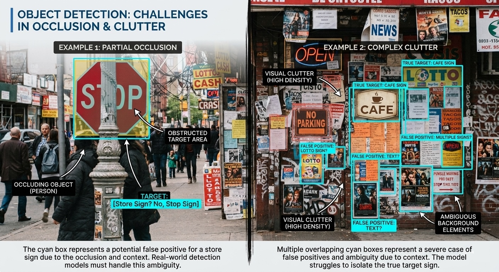
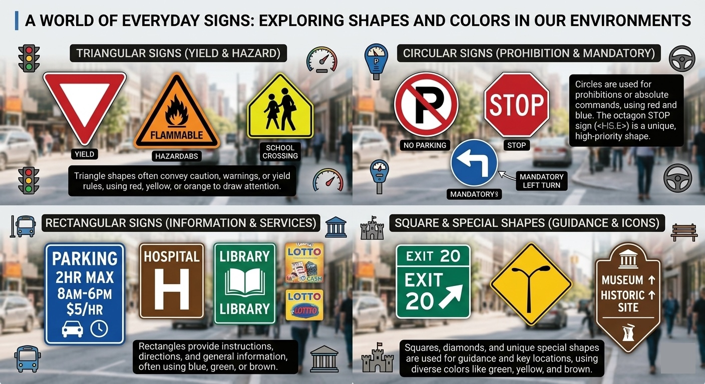
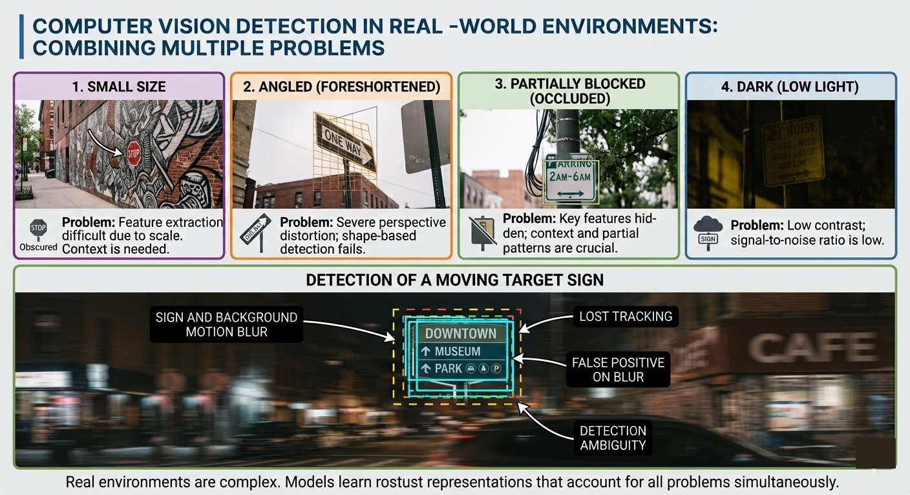

LISTEN TO THIS PAGE
Difficult Sign Detection Scenarios
Listen to how distance, viewpoints, occlusion, lighting, backgrounds, and camera movement can make sign detection difficult.
CS 663 — Computer Vision
Difficult Sign Detection Scenarios
Why real-world conditions make sign detection more difficult than detecting a clear sign in an ideal image.
The Difference Between an Easy and Difficult Image
A computer vision system may have an easier time detecting a sign when the sign is large, clearly visible, facing the camera, and separated from the background. Real-world environments are rarely this simple. A person using a mobile camera may encounter signs that are far away, viewed from an angle, partially blocked, poorly lit, or surrounded by many other objects. These conditions can make the sign look very different from the examples that a detection model may have seen during training.
1. Small and Distant Signs
One of the major challenges is detecting signs that are far away from the camera. As the distance increases, the sign takes up fewer pixels in the image. Important details may disappear when the sign becomes very small. The detector then has less visual information available to decide whether the object is actually a sign.
Liu et al. specifically studied the problem of small traffic signs and developed scale-aware features to help detect signs appearing at different sizes. [3]
Zhu et al. also used multiple feature-map scales for traffic-sign detection, showing why detecting objects at different sizes is important. Their TT100K dataset also contains many small traffic signs in realistic street scenes. [4]
Large Sign
A nearby sign occupies a larger portion of the image and provides more pixels for detection.
Small Sign
A distant sign occupies fewer pixels and can be harder to separate from the background.
2. Different Viewpoints and Angles
A sign does not always face the camera directly. If the camera approaches from the side, the sign can appear distorted because of perspective. A rectangular sign may appear much narrower from a side angle. At a more extreme angle, part of the sign may become difficult to see.
Front View
Most of the sign is visible and its shape is easier to identify.
Moderate Angle
The sign becomes distorted and its visible shape changes.
Extreme Angle
A large portion of the sign may no longer be visible to the camera.
Research Connection
Hsiao and Hebert studied object detection under arbitrary viewpoints and considered visibility and three-dimensional information when detecting objects. [6]
This provides a useful example of why a computer vision system cannot always assume that an object will appear from one standard viewpoint.
3. Partial Occlusion
Occlusion occurs when another object blocks part of a sign. Examples include people, furniture, vehicles, or other objects in the environment.
Even when only part of a sign is visible, the computer vision system still needs to determine whether the visible area belongs to a sign. The less of the sign that is visible, the less visual information the system has available.
Previous research has shown that local features and surrounding context can help when signs are partially blocked. [5] [3]
4. Complex Backgrounds
A sign can be difficult to detect when the surrounding environment contains many objects, colors, patterns, or other pieces of text.
For example, an indoor hallway might contain room signs, advertisements, posters, decorations, doors, windows, and emergency information.

A system that searches for anything containing text could produce many possible detections, even when most of those objects are not useful to the user.
Visual Spam
James Coughlan described this problem as "visual spam." An environment can contain many signs and instances of printed text, creating the problem of deciding which information is actually important to the user. [8]
This means that successful sign detection is not only about finding more objects. The system also needs to determine which detected signs are relevant.
5. Lighting Conditions
Lighting can change the appearance of a sign in a camera image. A sign may look different in bright sunlight, a shadow, a dark hallway, or under artificial lighting.
Reflections can also make parts of a sign difficult to see. Changes in brightness and contrast can affect traditional techniques such as color thresholding and edge detection.
Research datasets such as TT100K include traffic-sign images collected under different lighting and weather conditions, which helps researchers test how detection systems perform in less controlled environments. [4]
Deep-learning systems can also be affected if the training data does not contain enough examples of the lighting conditions that occur in the real environment.
6. Different Shapes, Sizes, and Appearances
Signs do not all look the same. They can have different shapes, colors, sizes, fonts, symbols, and designs depending on their purpose and location. For example, an Exit sign, Restroom sign, Fire Alarm sign, and traffic sign can have very different visual appearances.

This means a detection system cannot rely on one simple shape or color to identify every type of sign. Previous research has used different approaches to handle this variation, including learned features, multiple scales, context, and object classification. [1] [3] [4]
Cheraghi et al. evaluated different types of signs, including Exit, Restroom, Mask, and Fire Alarm signs, rather than treating every sign as having the same appearance. [1]
7. Camera Movement and Motion Blur
A person may hold a smartphone while walking. Movement can cause the camera image to become blurred, especially when the camera moves quickly.
Motion blur can remove details that a detection model would normally use to identify a sign.
Coughlan specifically identified camera movement and motion blur as challenges for real-time sign recognition. He also noted that motion blur can be especially problematic in darker settings. [8]
Real Environments Can Combine Multiple Problems
The most difficult situations may involve several problems at the same time.
For example, a person could be walking down a dark hallway while holding a smartphone. An exit sign might be far away, partially blocked by another person, and viewed from an angle.

The resulting image could therefore contain several challenges:
Small
The sign is far away.
Angled
The camera is not directly facing the sign.
Occluded
Another object blocks part of the sign.
Dark
There is not enough light in the environment.
Moving
The camera is moving while the image is captured.
Cluttered
Other objects compete with the sign for the detector's attention.
Why These Scenarios Matter
A system that detects signs only in clear and controlled images may not be reliable when used in the real world.
This is why previous research has focused on problems such as scale, occlusion, viewpoint, context, and camera movement. [3] Testing these conditions provides a better understanding of the strengths and weaknesses of a sign detection system.
What Comes Next?
The next section looks at what current sign detection systems can accomplish, where they still have limitations, and the challenges involved in putting these systems on mobile devices.
Next: Successes and Limitations →